Vaccination Statistics
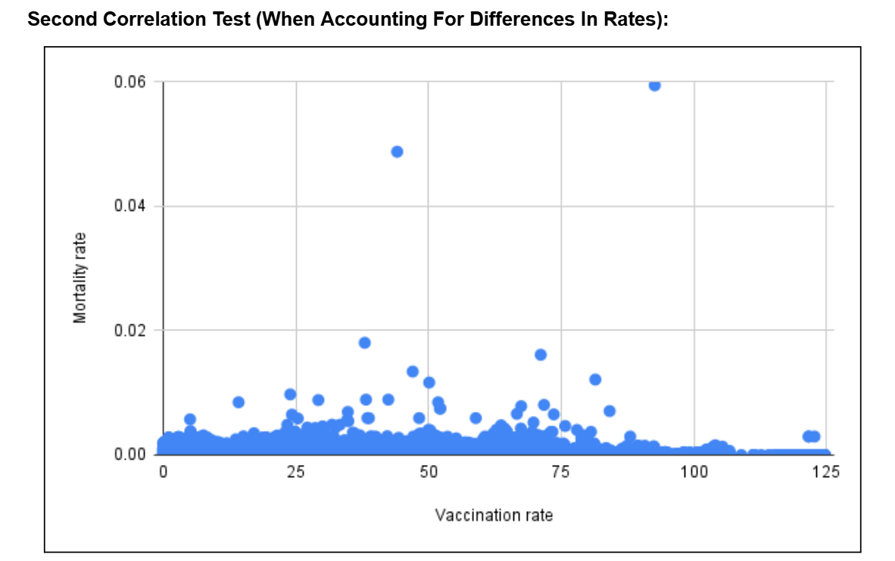
In my biostatistics class, there was a group project involving the utilization of large-scale data to analyze a health-based phenomenon. The graph to the left shows the graph made correlating vaccination rates and the mortality rates regarding COVID-19. The dataset we obtained was from Kaggle, an open source repository and showed a negative correlation, indicating as more vaccinations occured (among the 50+ countries sampled), the lower COVID-19 deaths they were. (The data in this analysis were based on date and vaccinations take time to work so temporal altercations to the dataset were applied to account for it). This project was done utilizing Kaggle for the dataset, and MatLab, JMP, and Microsoft Excel for data manipulation and analysis.
Spinal Plate Materials Testing
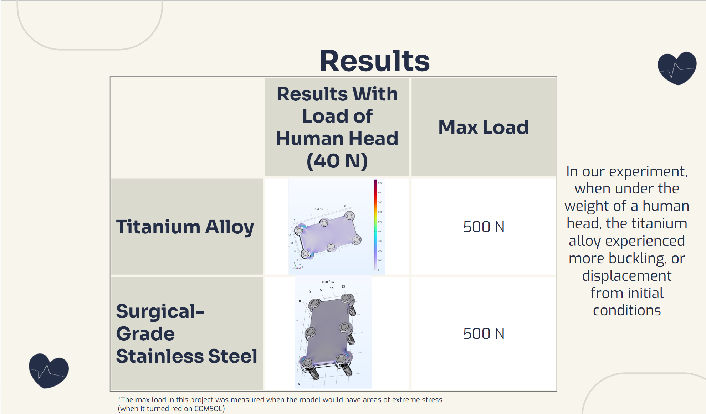
In this project, a group of me and my peers analyzed the material effects of different biocompatible metals with applied forces, mimicking the vertical forces gravity forces excerted on the human spine. The framework for the spinal plate was created using Fusion360 and was then imported onto COMSOL Multiphysics for the force simulation. In the end, we analyzed that the different metals we tested had differing attributes but we ended in the conclusion via COMSOL Multiphysics that for force experienced, medical grade surgical steel was superior in shape retention compared to titanium.
Chiari Malformation Analysis
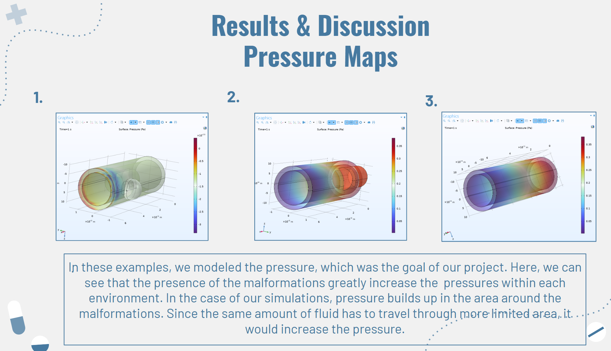
For a circulation physiology/fluid dynamics class, we analyzed the fluid movement of spinal fluid in the presence of Chiari Malformations. By utilizing Fusion360 to make the base model of the spinal column and the malformations and COMSOL Multiphysics to simulate the fluid activity of spinal fluid, the relationship between malformation and spinal fluid pressure and velocity was modeled. The photo on the left shows how Chiari Malformations when accumulated, cause pressure build-up.
In a biomaterials class, biological developments were researched, analyzed and a future iterations of implimentations were designed. The topic chosen was Sweat Cells. Along with a group of my peers, we researched current limitations, parts, and attempted to predict the future applications of the device. One of these is the utilization and development of Sweat Cells, increasing their battery limitations and their use in fitness trackers.
MRI Optimization
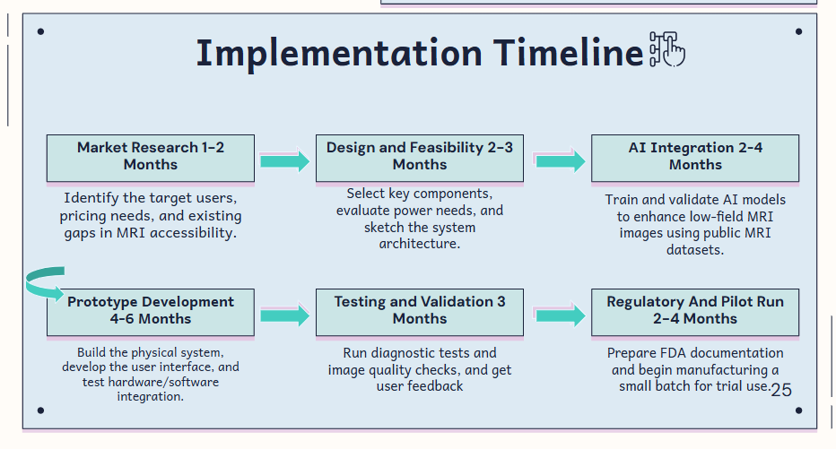
In a bioinstrumentation class, teams chose a medical device or phenomenon and were assigned to how their design can be improved and implimented to be more equitable, accessible or have better function. The team was also assigned to make a theoretical roll-out on how their devices could be marketed and implimented to their extended user base. The group I was a part of chose MRIs and in an attempt to improve the device and make it more equitable, we chose to impliment AI to bridge the gap in MRI resolution and making it smaller and more portable to allow lower-income areas and areas without electricity to utilize them.
Ethanol Metabolism
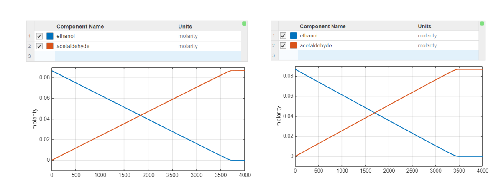
In a signal analysis class, the final project was to utilize MatLab to model a biological phenomenon. The chosen phenomenon was the human metabolism of ethanol. By utilizing SimBiology in MatLab, differential equations to model the rate of metabolism for different alchohol levels. The photo to the left is a SimBiology model showing the different exponential decays of alchohol levels given a set unchangeable amount of substrate to process it. We chose different levels of ethenol to represent different levels of alcohol consumption, varying from one drink to alchohol poisoning.
Electrocardiogram via NIElvis
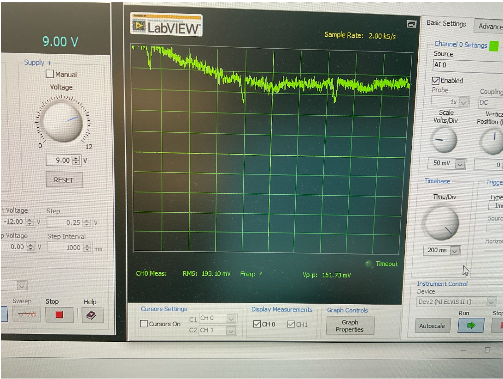
In a biointrumentation lab, we were assigned to make and replicate a multitude of medical devices. One of these medical devices was an ECG (electrocardiogram). By utilizing NIElvis along with a digitally connected breadboard, electrode strips, diodes, operational amplifiers, capacitors and wires, a partner and I were able to mimic the functions of an electrocardiogram.
CY-Pet Transformation
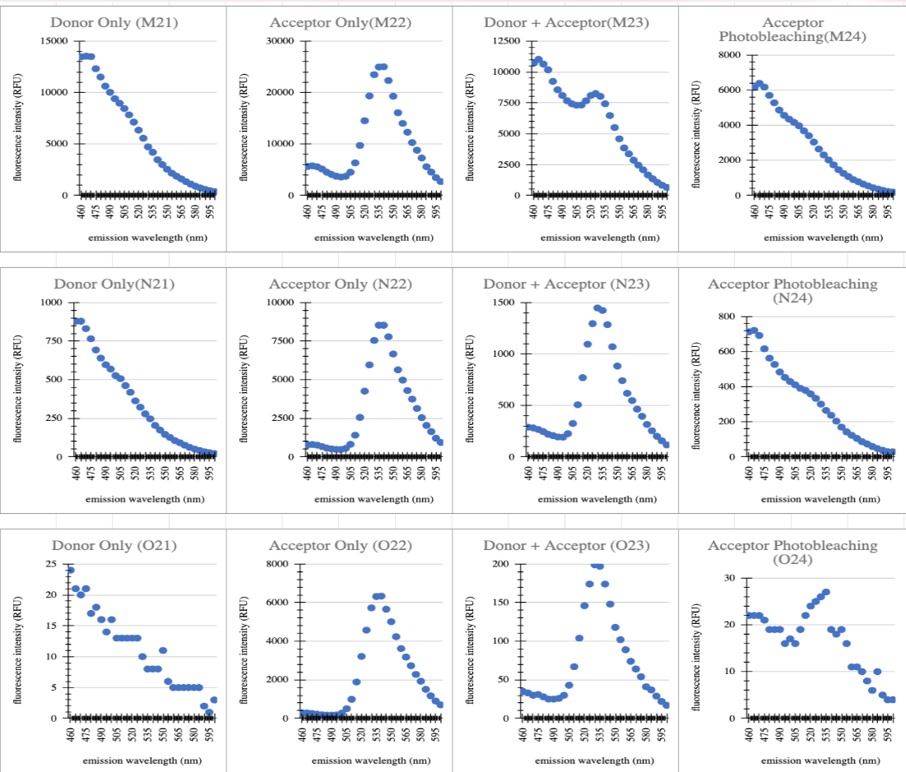
In a biotechnology lab, we were assigned a long-term project to express and validate the presence of proteins. In this long-term project, a partner and I utilized Top10 Ecoli. to express the fluorescent CY-Pet protein. The first half of the project was to sequence and validate the presence of the CYPet strain utilizing the sequencer software, CLC. The second half was the utilization of gel electrophoresis and the software Chroma and FRET readings to categorize and validate protein samples into a mutated, identical and contaminated group.
Microfluidics Modeling
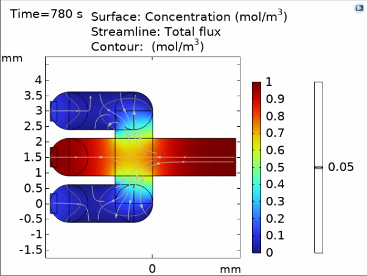
In a microfluidics class, we were assigned to model a lab-on-a-chip on COMSOL Multiphysics. In this, I chose a three-pronged mixer that would input one fluid and two parallel streams and a reacting wall that would act as a substrate, filtering and changing the composition of the streams. Theoretically, this could be utilized as a blood thinner with blood going through all three channels while the top and bottom channels removing the red blood cells, leaving behind only plasma. Theoretically, the output would be a stream of blood with a higher plasma percentage, removing the need and dangers of blood thinners.
Lab-On-A-Chip
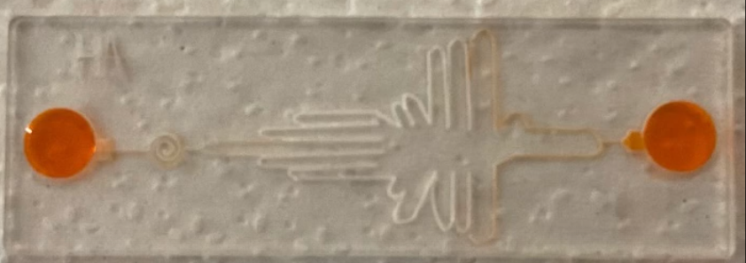
Another project in the microfluidics was to make a laser-cut lab-on-a-chip by utilizing software such as Inkscape to make the lines of the chip and Glowforge to categorize the different lines as scores, embedded shapes, cuts, and engravements. As we were given creative liberty, I chose to make a shape resembling a hummingbird containing many divots and spirals, allowing for the incorporation and addition of external substances into the processed fluid.
Neonate Murine Autofeeder
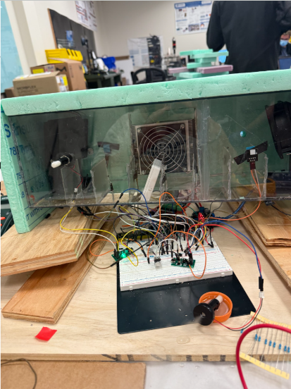
For my senior design class, a group of peers and I were assigned to make a controllable research environment to help researchers analyze Necrotizing Enterocolitis. This long-term project involved the utilization of Fusion360 to 3D print different parts such as a rack-and-pinion and the motor holder, COMSOL Multiphysics to show how different fan angles circulate and distribute the air and its conditions, making them more consistent throughout the device. Furthermore, we utilized different electrical components such as MOSFET modules, LCD screens, solenoid valves, jack adaptors, and buck converters, controlling them with ArduinoIDE.
Biomechanics Of KineSpring Implant
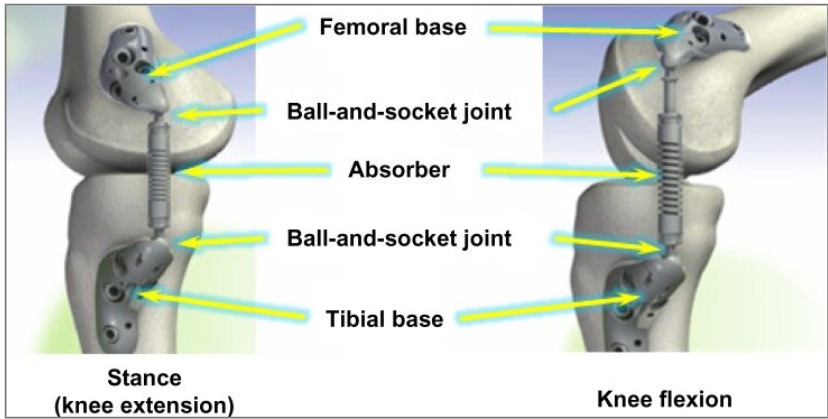
In an advanced biomechanics class, we were assigned to analyze a biological phenomenon and explain the mechanics of it. The group I was assinged to chose to do our analysis on KineSpring, a current solution to osteoarthiritis. In found literature, a repeated sentiment was that the device lacked universality. My group analyzed the problem and came to the proposal to change KineSpring stiffness to suite the users such as increasing the stiffness to decrease load for those with obesity and old age or to reduce the spring stiffness, allowing for better mobility for those with less severe osteoarthiritis.